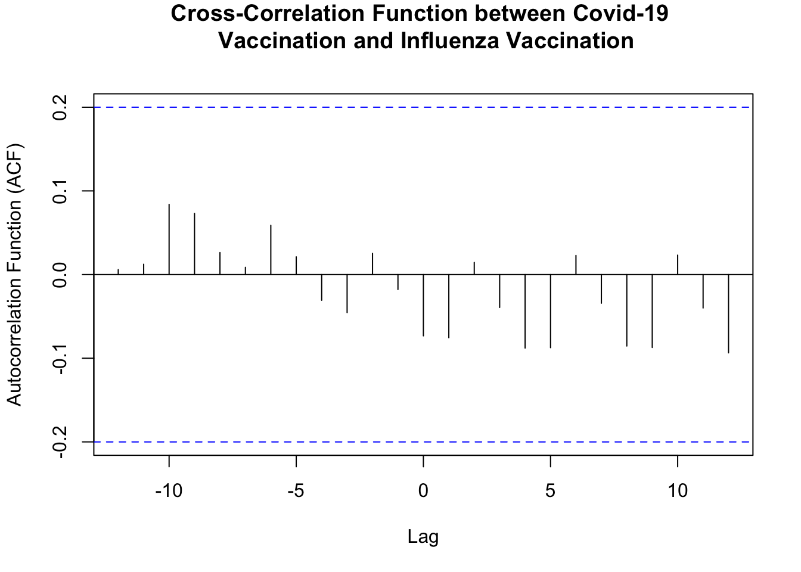
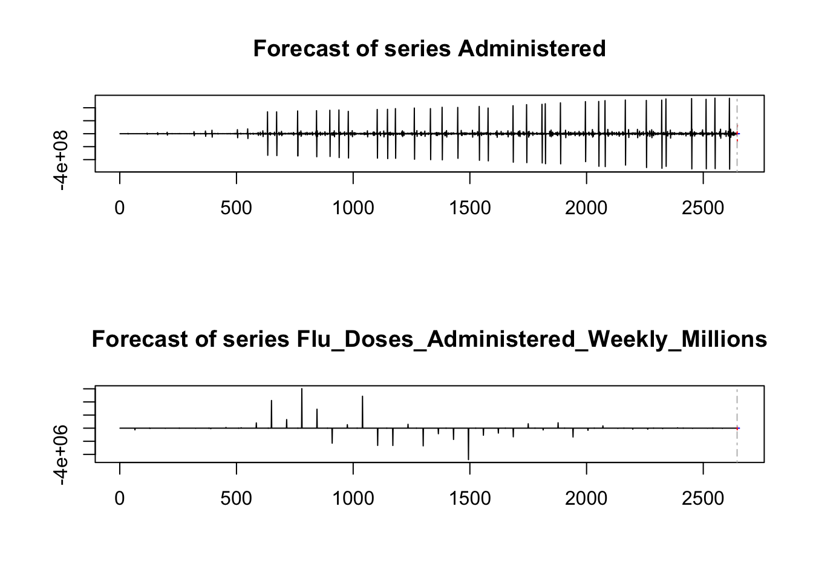

Loading in datasets made for some analysis in end of EDA document.
# Combine data for all years into one dataframe - covidcovid_vaccine_combined <-bind_rows( covid_vaccine_2021 %>%select(Date, Cumulative_Administered_Janssen, Cumulative_Administered_Moderna, Cumulative_Administered_Pfizer, Cumulative_Administered_Unk_Manuf) %>%pivot_longer(cols =-Date, names_to ="Manufacturer", values_to ="Cumulative_Administered") %>%mutate(Year =2021), # Add Year column for 2021 covid_vaccine_2022 %>%select(Date, Cumulative_Administered_Janssen, Cumulative_Administered_Moderna, Cumulative_Administered_Pfizer, Cumulative_Administered_Novavax, Cumulative_Administered_Unk_Manuf) %>%pivot_longer(cols =-Date, names_to ="Manufacturer", values_to ="Cumulative_Administered") %>%mutate(Year =2022), # Add Year column for 2022 covid_vaccine_2023 %>%select(Date, Cumulative_Administered_Janssen, Cumulative_Administered_Moderna, Cumulative_Administered_Pfizer, Cumulative_Administered_Novavax, Cumulative_Administered_Unk_Manuf) %>%pivot_longer(cols =-Date, names_to ="Manufacturer", values_to ="Cumulative_Administered") %>%mutate(Year =2023) # Add Year column for 2023)# Rename the factor levels for better readabilitycovid_vaccine_combined$Manufacturer <-factor(covid_vaccine_combined$Manufacturer,levels =c("Cumulative_Administered_Janssen", "Cumulative_Administered_Moderna", "Cumulative_Administered_Pfizer", "Cumulative_Administered_Novavax", "Cumulative_Administered_Unk_Manuf"),labels =c("Janssen", "Moderna", "Pfizer", "Novavax", "Unknown Manufacturer"))# Combine datasets - fluflu_vaccine_all <-bind_rows( flu_vaccine_2021 %>%mutate(Year ="2021"), flu_vaccine_2022 %>%mutate(Year ="2022"), flu_vaccine_2023 %>%mutate(Year ="2023"))
COVID-19
Simple Linear Fit Models
I will run a few simple linear fit models that predict number of vaccines administered based on manufacturer.
# Combine the data for all yearscovid_vaccine_all <-bind_rows( covid_vaccine_2021 %>%mutate(Year =2021), covid_vaccine_2022 %>%mutate(Year =2022), covid_vaccine_2023 %>%mutate(Year =2023))# Reshape the dataset to long formatcovid_vaccine_long <- covid_vaccine_all %>%select(Date, Year, Administered_Janssen, Administered_Moderna, Administered_Pfizer, Administered_Novavax, Administered_Unk_Manuf) %>%pivot_longer(cols =starts_with("Administered"), names_to ="Manufacturer", values_to ="Doses_Administered")# Rename manufacturer categories for readabilitycovid_vaccine_long$Manufacturer <-factor(covid_vaccine_long$Manufacturer,levels =c("Administered_Janssen", "Administered_Moderna", "Administered_Pfizer", "Administered_Novavax", "Administered_Unk_Manuf"), labels =c("Janssen", "Moderna", "Pfizer", "Novavax", "Unknown Manufacturer"))# Fit a simple linear regression model predicting doses administered based on manufacturermodel <-lm(Doses_Administered ~ Manufacturer, data = covid_vaccine_long)# Display model summarysummary(model)
Call:
lm(formula = Doses_Administered ~ Manufacturer, data = covid_vaccine_long)
Residuals:
Min 1Q Median 3Q Max
-7130441 -3159903 -79462 -130 394555513
Coefficients:
Estimate Std. Error t value Pr(>|t|)
(Intercept) 413529 86879 4.760 1.94e-06 ***
ManufacturerModerna 4380710 122865 35.655 < 2e-16 ***
ManufacturerPfizer 6716912 122865 54.669 < 2e-16 ***
ManufacturerNovavax -413399 122871 -3.364 0.000767 ***
ManufacturerUnknown Manufacturer -401398 122868 -3.267 0.001087 **
---
Signif. codes: 0 '***' 0.001 '**' 0.01 '*' 0.05 '.' 0.1 ' ' 1
Residual standard error: 16790000 on 186735 degrees of freedom
(10 observations deleted due to missingness)
Multiple R-squared: 0.02993, Adjusted R-squared: 0.02991
F-statistic: 1440 on 4 and 186735 DF, p-value: < 2.2e-16
With an alpa value of 0.05, the p-values for each manufacturer are less than 0.5 (Janssen was set as the reference so it does not appear in the coefficients list with an estimate) . This means that the manufacturer has a statistically significant impact on the number of doses administered. It can be noted that Pfizer and Moderna both have very small p-values (both of 2e-16); furthermore they have positive estimate values, indicating they have a higher number of administered does than Janssen. The negative estimate values for Novavax and Unknown Manufacturer indicate that they have a lower number of administered doses compared to Janssen.
Making a table to display the results above:
library(gt)# Extracting the summary of the linear regression modelmodel_summary <-summary(model)# Get the coefficients (Manufacturer levels)coefficients <-as.data.frame(model_summary$coefficients)# Rename columns for better readabilitycolnames(coefficients) <-c("Estimate", "Std. Error", "t value", "Pr(>|t|)")# Add the Manufacturer names as a columncoefficients$Manufacturer <-rownames(coefficients)# Reorder columns manually using base Rcoefficients <- coefficients[, c("Manufacturer", "Estimate", "Std. Error", "t value", "Pr(>|t|)")]# Create a gt table for the regression resultsmodel_gt_table <- coefficients %>%gt() %>%tab_header(title =md("**Linear Regression Model: COVID-19 Vaccine Doses Administered by Manufacturer**") ) %>%cols_label(Manufacturer =md("**Manufacturer**"),Estimate =md("**Estimate**"),`Std. Error`=md("**Standard Error**"),`t value`=md("**t-Value**"),`Pr(>|t|)`=md("**P-Value**") ) %>%tab_style(style =list(cell_fill(color ="#EAEDED"),cell_text(weight ="bold", color ="black") ),locations =cells_body(columns ="Manufacturer") # Apply to the Manufacturer column ) %>%tab_style(style =cell_fill(color ="#F7F7F7"), # Light gray background for alternating rowslocations =cells_body(rows =seq(1, nrow(coefficients), 2)) # Apply to odd rows ) %>%tab_spanner(label ="Model Statistics",columns =c("Estimate", "Std. Error", "t value", "Pr(>|t|)") ) %>%tab_footnote(footnote ="Regression results for vaccine doses administered by manufacturer.",locations =cells_title() )# Display the tablemodel_gt_table
Linear Regression Model: COVID-19 Vaccine Doses Administered by Manufacturer1
Manufacturer
Model Statistics
Estimate
Standard Error
t-Value
P-Value
(Intercept)
413528.7
86878.85
4.759832
1.938988e-06
ManufacturerModerna
4380710.1
122865.25
35.654591
1.729600e-277
ManufacturerPfizer
6716912.3
122865.25
54.668936
0.000000e+00
ManufacturerNovavax
-413399.0
122871.00
-3.364496
7.669890e-04
ManufacturerUnknown Manufacturer
-401397.9
122867.71
-3.266911
1.087474e-03
1 Regression results for vaccine doses administered by manufacturer.
# Save the table as a PNG filegtsave(model_gt_table, here("results", "tables", "covid-manuf-reg-table.png"))
Seasonal COVID-19 Vaccine Modelling
This model was suggested by Microsoft copilot.
model_seasonal_covid <-lm(Administered ~ MMWR_week +sin(2* pi * MMWR_week /52) +cos(2* pi * MMWR_week /52), data = covid_vaccine_all)summary(model_seasonal_covid)
Call:
lm(formula = Administered ~ MMWR_week + sin(2 * pi * MMWR_week/52) +
cos(2 * pi * MMWR_week/52), data = covid_vaccine_all)
Residuals:
Min 1Q Median 3Q Max
-16535817 -11130957 -8867580 -4263049 663786685
Coefficients:
Estimate Std. Error t value Pr(>|t|)
(Intercept) 8655046 817376 10.589 < 2e-16 ***
MMWR_week 151683 29643 5.117 3.12e-07 ***
sin(2 * pi * MMWR_week/52) 1567212 632140 2.479 0.0132 *
cos(2 * pi * MMWR_week/52) -349867 404843 -0.864 0.3875
---
Signif. codes: 0 '***' 0.001 '**' 0.01 '*' 0.05 '.' 0.1 ' ' 1
Residual standard error: 53870000 on 37346 degrees of freedom
Multiple R-squared: 0.0009149, Adjusted R-squared: 0.0008346
F-statistic: 11.4 on 3 and 37346 DF, p-value: 1.812e-07
Week: The negative coefficient for Week suggests that as the weeks progress, the number of flu doses administered decreases slightly. Seasonal Terms: Both sin(2 * pi * Week/52) and cos(2 * pi * Week/52) are highly significant, indicating strong seasonal patterns in flu vaccine administration.
R-squared: The multiple R-squared value of 0.636 indicates that approximately 63.6% of the variability in flu doses administered can be explained by the model.
Influenza
Simple Linear Fit Models
I will run a few simple linear fit models that predict number of vaccines administered based on the week of the year.
# Linear regression models for flu vaccine datamodel_2021 <-lm(Flu_Doses_Administered_Weekly_Millions ~ Week, data = flu_vaccine_2021)model_2022 <-lm(Flu_Doses_Administered_Weekly_Millions ~ Week, data = flu_vaccine_2022)model_2023 <-lm(Flu_Doses_Administered_Weekly_Millions ~ Week, data = flu_vaccine_2023)# Model summariessummary(model_2021)
Call:
lm(formula = Flu_Doses_Administered_Weekly_Millions ~ Week, data = flu_vaccine_2021)
Residuals:
Min 1Q Median 3Q Max
-7910723 -4399588 -1900173 5032629 12322128
Coefficients:
Estimate Std. Error t value Pr(>|t|)
(Intercept) 1608174 2128142 0.756 0.4557
Week 124857 60223 2.073 0.0468 *
---
Signif. codes: 0 '***' 0.001 '**' 0.01 '*' 0.05 '.' 0.1 ' ' 1
Residual standard error: 5856000 on 30 degrees of freedom
Multiple R-squared: 0.1253, Adjusted R-squared: 0.09617
F-statistic: 4.298 on 1 and 30 DF, p-value: 0.04683
summary(model_2022)
Call:
lm(formula = Flu_Doses_Administered_Weekly_Millions ~ Week, data = flu_vaccine_2022)
Residuals:
Min 1Q Median 3Q Max
-8003473 -2413342 -1035254 2483197 18122351
Coefficients:
Estimate Std. Error t value Pr(>|t|)
(Intercept) 1112617 2111483 0.527 0.6021
Week 139055 59752 2.327 0.0269 *
---
Signif. codes: 0 '***' 0.001 '**' 0.01 '*' 0.05 '.' 0.1 ' ' 1
Residual standard error: 5810000 on 30 degrees of freedom
Multiple R-squared: 0.1529, Adjusted R-squared: 0.1247
F-statistic: 5.416 on 1 and 30 DF, p-value: 0.02689
summary(model_2023)
Call:
lm(formula = Flu_Doses_Administered_Weekly_Millions ~ Week, data = flu_vaccine_2023)
Residuals:
Min 1Q Median 3Q Max
-6813508 -4293387 -1899209 3514035 11295385
Coefficients:
Estimate Std. Error t value Pr(>|t|)
(Intercept) 1963335 1997328 0.983 0.3335
Week 96350 56521 1.705 0.0986 .
---
Signif. codes: 0 '***' 0.001 '**' 0.01 '*' 0.05 '.' 0.1 ' ' 1
Residual standard error: 5496000 on 30 degrees of freedom
Multiple R-squared: 0.08831, Adjusted R-squared: 0.05792
F-statistic: 2.906 on 1 and 30 DF, p-value: 0.09859
2021: With an alpha of 0.05, we can conclude that the week of the year in 2021 has a statistically significant impact on the flu vaccine doses administered each week of the year. However, it is important to note that the p-value is 0.0468, which is relatively close to 0.05.
2022: With an alpha of 0.05, we can conclude that the week of the year in 2022 has a statistically significant impact on the flu vaccine doses administered each week of the year (p-value = 0.0269).
2023: With an alpha of 0.05, we can conclude that the week of the year in 2023 does not have a statistically significant impact on the flu vaccine doses administered each week of the year (p value = 0.0986). It is interesting that 2023 does not have a statistically significant result, while 2021 and 2022 do.
Seasonal Flu Vaccine Modelling
This model was suggested by Microsoft copilot.
model_seasonal_flu <-lm(Flu_Doses_Administered_Weekly_Millions ~ Week +sin(2* pi * Week /52) +cos(2* pi * Week /52), data = flu_vaccine_all)summary(model_seasonal_flu)
Call:
lm(formula = Flu_Doses_Administered_Weekly_Millions ~ Week +
sin(2 * pi * Week/52) + cos(2 * pi * Week/52), data = flu_vaccine_all)
Residuals:
Min 1Q Median 3Q Max
-8341553 -2635829 14009 1865718 13479476
Coefficients:
Estimate Std. Error t value Pr(>|t|)
(Intercept) 6589074 890231 7.402 6.20e-11 ***
Week -100015 36994 -2.704 0.00817 **
sin(2 * pi * Week/52) -7641728 1199243 -6.372 7.29e-09 ***
cos(2 * pi * Week/52) -2475168 797703 -3.103 0.00255 **
---
Signif. codes: 0 '***' 0.001 '**' 0.01 '*' 0.05 '.' 0.1 ' ' 1
Residual standard error: 3652000 on 92 degrees of freedom
Multiple R-squared: 0.636, Adjusted R-squared: 0.6241
F-statistic: 53.58 on 3 and 92 DF, p-value: < 2.2e-16
MMWR_week: The positive coefficient for MMWR_week suggests that as the weeks progress, the number of COVID-19 doses administered increases slightly. Seasonal Term (sin): The term sin(2 * pi * MMWR_week/52) is significant, indicating some seasonal variation in vaccine administration. Seasonal Term (cos): The term cos(2 * pi * MMWR_week/52) is not significant, suggesting that the cosine component of the seasonal variation is not as strong.
R-squared: The multiple R-squared value of 0.0009149 indicates that the model explains only a very small fraction of the variability in the number of doses administered.
Relationship Between COVID-19 Vaccine Administration and Flu Vaccine Administration
I will now attempt to explore the relationship between COVID-10 vaccine administration and flu vaccine administration.
Cross-Correlation Function (CCF) Here is a time series analysis that may be interesting to analyze. This can help determine if increases in COVID-19 vaccine administration are associated with the number of flu vaccines administered later.
The small peaks and bars suggest that there is a very weak correlation between the administration of covid vaccines and flu vaccines during this time period (2021-2023). There appear to be a few small negative lags, indicating that flu vaccinations might slightly precede Covid-19 vaccinations. Overall, there is no strong relationship.
Making graph more aesthetically pleaseing.
# Specify the file path using the here package and open the PNG devicepng(here::here("results", "figures", "ccf.png"), width =800, height =600)# Generate the cross-correlation plot with the custom title and y-axis labelccf(covid_vaccine_combined$Cumulative_Administered, flu_vaccine_all$Cumulative_Flu_Doses_Distributed_Millions, lag.max =12, plot =TRUE, main ="Cross-Correlation Function between Covid-19 \n Vaccination and Influenza Vaccination", ylab ="") # Remove default y-axis label# Change the y-axis labeltitle(ylab ="Autocorrelation Function (ACF)")# Close the device to save the plotdev.off()
quartz_off_screen
2
# Display the saved plot# Generate the cross-correlation plot with the custom title and y-axis labelccf(covid_vaccine_combined$Cumulative_Administered, flu_vaccine_all$Cumulative_Flu_Doses_Distributed_Millions, lag.max =12, plot =TRUE, main ="Cross-Correlation Function between Covid-19 \n Vaccination and Influenza Vaccination", ylab ="") # Remove default y-axis label# Change the y-axis labeltitle(ylab ="Autocorrelation Function (ACF)")

Vector Autoregression (VAR)
Suggested by AI.
Ensure that the data is stationary before fitting the VAR model. Below, it appears that the COVID-19 vaccine dataset is stationary, while the flu vaccine dataset is not stationary. Therefore, we need to make the flu vaccine dataset stationary.
# Load needed packages library(vars)
Loading required package: MASS
Attaching package: 'MASS'
The following object is masked from 'package:dplyr':
select
Loading required package: strucchange
Loading required package: zoo
Attaching package: 'zoo'
The following objects are masked from 'package:base':
as.Date, as.Date.numeric
── Conflicts ────────────────────────────────────────── tidyverse_conflicts() ──
✖ stringr::boundary() masks strucchange::boundary()
✖ dplyr::filter() masks stats::filter()
✖ kableExtra::group_rows() masks dplyr::group_rows()
✖ dplyr::lag() masks stats::lag()
✖ MASS::select() masks dplyr::select()
ℹ Use the conflicted package (<http://conflicted.r-lib.org/>) to force all conflicts to become errors
# Ensure both data sets cover the same periodcombined_data <-merge(subset(covid_vaccine_all, select =c(Date, Administered)),subset(flu_vaccine_all, select =c(Start_Date, Flu_Doses_Administered_Weekly_Millions)),by.x ="Date", by.y ="Start_Date", all =FALSE)# Convert to time seriesdata_ts <-ts( combined_data[, c("Administered", "Flu_Doses_Administered_Weekly_Millions")],frequency =52,start =c(as.numeric(format(min(combined_data$Date), "%Y")),as.numeric(format(min(combined_data$Date), "%U"))))# ADF test to ensure data if stationary library(tseries)
Registered S3 method overwritten by 'quantmod':
method from
as.zoo.data.frame zoo
adf.test(data_ts[, "Administered"])
Warning in adf.test(data_ts[, "Administered"]): p-value smaller than printed
p-value
Augmented Dickey-Fuller Test
data: data_ts[, "Administered"]
Dickey-Fuller = -14.822, Lag order = 13, p-value = 0.01
alternative hypothesis: stationary
Augmented Dickey-Fuller Test
data: data_ts[, "Flu_Doses_Administered_Weekly_Millions"]
Dickey-Fuller = -1.2682, Lag order = 13, p-value = 0.8882
alternative hypothesis: stationary
Warning in adf.test(data_ts_diff[, "Flu_Doses_Administered_Weekly_Millions"]):
p-value smaller than printed p-value
Augmented Dickey-Fuller Test
data: data_ts_diff[, "Flu_Doses_Administered_Weekly_Millions"]
Dickey-Fuller = -13.72, Lag order = 13, p-value = 0.01
alternative hypothesis: stationary
# Determine the optimal lag lengthlag_selection <-VARselect(data_ts, lag.max =10, type ="const")optimal_lag <- lag_selection$selection["AIC(n)"]# Fit the VAR modelvar_model <-VAR(data_ts_diff, p = optimal_lag, type ="const")# Summarize the VAR modelsummary(var_model)
VAR Estimation Results:
=========================
Endogenous variables: Administered, Flu_Doses_Administered_Weekly_Millions
Deterministic variables: const
Sample size: 2644
Log Likelihood: -87605.583
Roots of the characteristic polynomial:
0.5015 7.11e-05
Call:
VAR(y = data_ts_diff, p = optimal_lag, type = "const")
Estimation results for equation Administered:
=============================================
Administered = Administered.l1 + Flu_Doses_Administered_Weekly_Millions.l1 + const
Estimate Std. Error t value
Administered.l1 -5.017e-01 1.683e-02 -29.805
Flu_Doses_Administered_Weekly_Millions.l1 2.640e+00 4.954e+00 0.533
const 3.362e+03 1.177e+06 0.003
Pr(>|t|)
Administered.l1 <2e-16 ***
Flu_Doses_Administered_Weekly_Millions.l1 0.594
const 0.998
---
Signif. codes: 0 '***' 0.001 '**' 0.01 '*' 0.05 '.' 0.1 ' ' 1
Residual standard error: 60510000 on 2641 degrees of freedom
Multiple R-Squared: 0.2517, Adjusted R-squared: 0.2511
F-statistic: 444.2 on 2 and 2641 DF, p-value: < 2.2e-16
Estimation results for equation Flu_Doses_Administered_Weekly_Millions:
=======================================================================
Flu_Doses_Administered_Weekly_Millions = Administered.l1 + Flu_Doses_Administered_Weekly_Millions.l1 + const
Estimate Std. Error t value
Administered.l1 -5.333e-05 6.613e-05 -0.807
Flu_Doses_Administered_Weekly_Millions.l1 2.095e-04 1.946e-02 0.011
const -1.399e+02 4.622e+03 -0.030
Pr(>|t|)
Administered.l1 0.420
Flu_Doses_Administered_Weekly_Millions.l1 0.991
const 0.976
Residual standard error: 237700 on 2641 degrees of freedom
Multiple R-Squared: 0.0002462, Adjusted R-squared: -0.0005109
F-statistic: 0.3252 on 2 and 2641 DF, p-value: 0.7224
Covariance matrix of residuals:
Administered
Administered 3.661e+15
Flu_Doses_Administered_Weekly_Millions 9.146e+10
Flu_Doses_Administered_Weekly_Millions
Administered 9.146e+10
Flu_Doses_Administered_Weekly_Millions 5.649e+10
Correlation matrix of residuals:
Administered
Administered 1.000000
Flu_Doses_Administered_Weekly_Millions 0.006359
Flu_Doses_Administered_Weekly_Millions
Administered 0.006359
Flu_Doses_Administered_Weekly_Millions 1.000000
# Forecast the next 10 periodsforecast <-predict(var_model, n.ahead =10)# Plot the forecastplot(forecast)

# Granger causality testgranger_test <-causality(var_model, cause ="Administered")print(granger_test)
$Granger
Granger causality H0: Administered do not Granger-cause
Flu_Doses_Administered_Weekly_Millions
data: VAR object var_model
F-Test = 0.65047, df1 = 1, df2 = 5282, p-value = 0.42
$Instant
H0: No instantaneous causality between: Administered and
Flu_Doses_Administered_Weekly_Millions
data: VAR object var_model
Chi-squared = 0.10692, df = 1, p-value = 0.7437
COVID-19 Vaccine by Manufacturer (Doses_Administered ~ Manufacturer): R-sqaured = 0.02993; Roughly 3% of the variation in doses administered is explained by manufacturer (not high!). However, Moderna (+4,380,710, p < 0.001) and Pfizer (+6,716,912, p < 0.001) are significantly associated with higher doses. (Intercept) = 86,879; Moderna = 122,865; Pfizer = 122,865; Novavax = 122,871; Unknown Manufacturer = 122,868 –> these standard errors are VERY high
COVID-19 Vaccine Seasonality (Administered ~ MMWR_week + sin(2 * pi * MMWR_week/52) + cos(2 * pi * MMWR_week/52)): R = 0.00091; only 0.09% of the variance is explained by seasonality.This isn’t high. (Intercept) = 817,376; MMWR_week = 29,643; sin(2 * pi * MMWR_week/52) = 632,140; cos(2 * pi * MMWR_week/52) = 404,843 –> these standard errors are also VERY high
Flu Vaccine Weekly Doses Over Time (by Year): R-squared = 0.125 (2021), 0.1529 (2022), 0.088 (2023); Therefore, week doesn’t have a significant impact. 2021- Inercept SE= 2,128, Week SE = 142 60,223; 2022- Inercept SE = 2,111,Week SE = 483 59,752; 2023- Inercept SE = 1,997, Week SE = 328 56,521 –> high SEs
Flu Vaccine Seasonality (Flu_Doses_Administered_Weekly_Millions ~ Week + sin(2 * pi * Week/52) + cos(2 * pi * Week/52)): R-squared = 0.636; 63.6% of the variance is explained by seasonality. This suggests that flu vaccine administration has a strong seasonal pattern. (Intercept) = 890,231; Week = 36,994; sin(2 * pi * Week/52) = 1,199,243; cos(2 * pi * Week/52) = 797,703 –> high SEs
VAR Analysis: COVID-19 vs Flu Vaccine: No Granger Causality (p = 0.42); No Instantaneous Causality (p = 0.74); Significant Lagged Effect for COVID (lag coefficient = -0.5017, p < 0.001). This suggests that COVID vaccination trends are internally driven and there’s no meaningful relationship with flu vaccination trends. Note: alpha = 0.05 COVID Doses: Administered.l1 = 0.01683 – Small standard error, suggesting stable estimates for lagged COVID doses. Flu Doses.l1 = 4.954 – Large standard error, indicating high variability in the effect of flu doses on COVID doses. Constant = 1,177,000 – Extremely large standard error, suggesting the constant term is poorly estimated due to high variability. Flu Doses: Administered.l1 = 0.00006613 – Small but not significant, indicating minimal influence of COVID doses on flu doses. Flu Doses.l1 = 0.01946 – Small standard error, suggesting stable flu dose predictions from previous flu doses. Constant = 4,622 – Large standard error, reflecting variability in baseline flu doses.
Putting results into table.
granger_test <-causality(var_model, cause ="Administered")library(gt)# Create the table datagranger_table <-data.frame(Metric =c("Hypothesis", "F_Test", "df1", "df2", "P_Value"),Value =c( granger_test$Granger$method, granger_test$Granger$statistic[1, 1], granger_test$Granger$parameter["df1"], granger_test$Granger$parameter["df2"], granger_test$Granger$p.value[1, 1] ))# Format with gt and apply consistent stylinggranger_table_gt <- granger_table %>%gt() %>%tab_header(title =md("**Granger Causality Test Results**") ) %>%cols_label(Metric =md("**Metric**"),Value =md("**Value**") ) %>%tab_style(style =list(cell_fill(color ="#EAEDED"),cell_text(weight ="bold", color ="black") ),locations =cells_body(columns ="Metric") # Apply to the Metric column ) %>%tab_style(style =cell_fill(color ="#EAEDED"),locations =cells_body(columns ="Value") # Apply to the Value column ) %>%tab_style(style =cell_fill(color ="#F7F7F7"), # Light gray background for alternating rowslocations =cells_body(rows =seq(1, nrow(granger_table), 2)) # Apply to odd rows ) %>%tab_footnote(footnote =" Granger causality test results for vaccine data.",locations =cells_title() )# Display the tablegranger_table_gt
Granger Causality Test Results1
Metric
Value
Hypothesis
Granger causality H0: Administered do not Granger-cause Flu_Doses_Administered_Weekly_Millions
F_Test
0.650474392589794
df1
1
df2
5282
P_Value
0.419979433991784
1 Granger causality test results for vaccine data.
# Save the formatted gt table library(webshot2)library(chromote)gtsave(granger_table_gt, here("results", "tables", "granger-table-gt.png"))
We must fail to reject the null hypothesis. This suggests that changes in COVID vaccination rates do not appear to influence flu vaccination rates in a predictive sense.